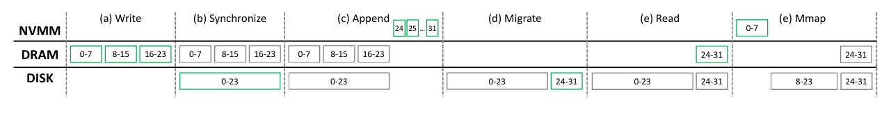
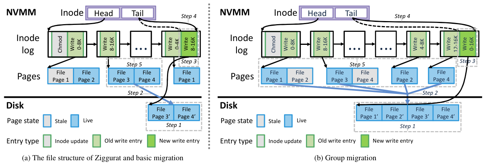
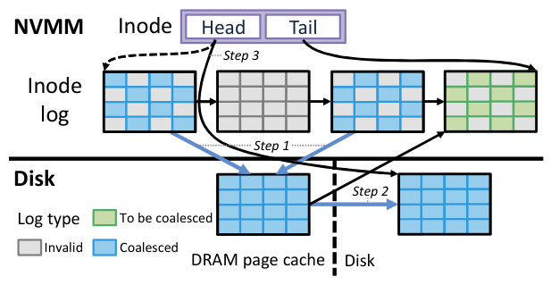
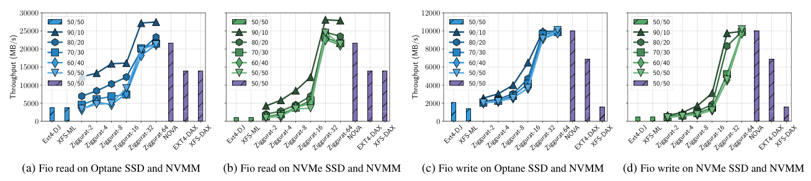
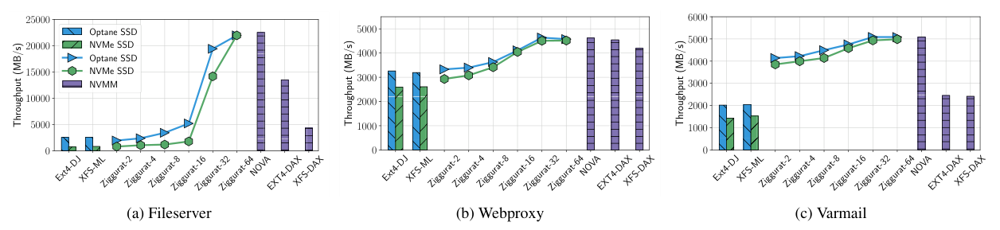
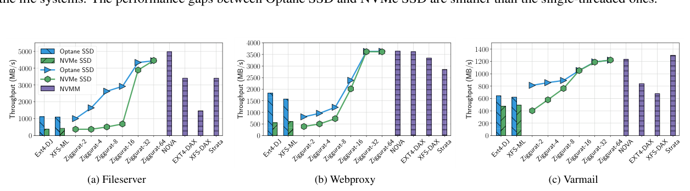
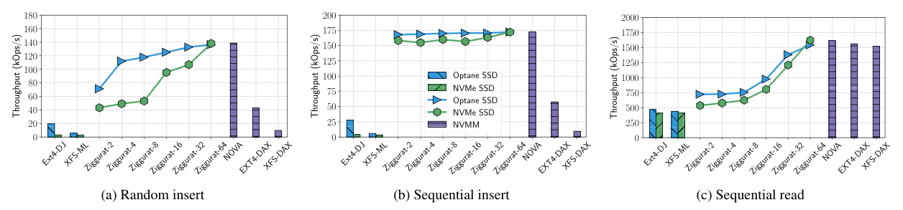
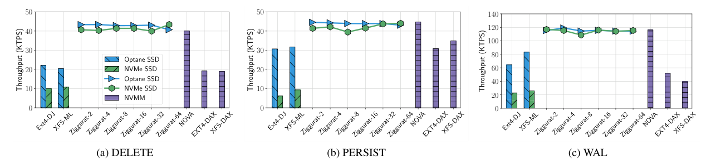
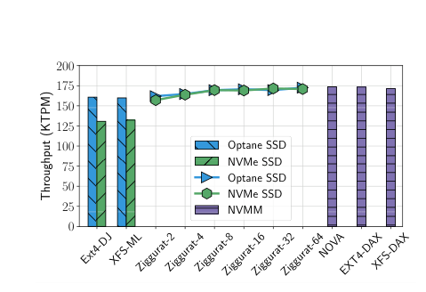
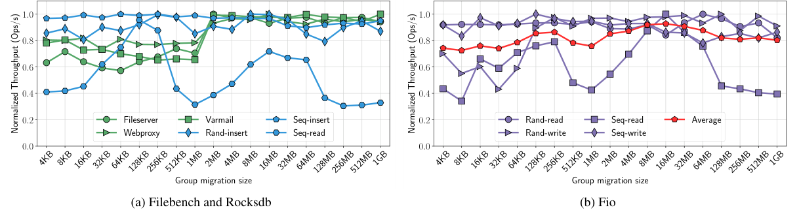

Ziggurat: A Tiered File System for Non-Volatile Main Memories and Disks
This page was written by an AI model to give a high-level overview of the paper. Please check the paper for detail: USENIX.
Byte-addressable non-volatile main memory (NVMM, e.g. battery-backed NVDIMMs or 3D-XPoint) sits on the memory bus and gives applications DRAM-like latency with persistence. The catch is cost and capacity: NVMM is more expensive per byte than SSDs or hard disks and does not scale to the same capacities. A workload that needs both speed and large capacity therefore wants both tiers at once: NVMM for the data that matters for performance, and disk (SSD or HDD) for everything else. The question is how a file system should decide, continuously and automatically, which data belongs where.
Existing tiered storage systems, such as FlashStore and Nitro, were built around block-based devices, so they are tuned to serve large, sequential I/O well and treat small or random writes as something to avoid. NVMM breaks that assumption: it handles small, random writes about as well as large, sequential ones, so a tiered system that still shuffles data around to make writes look disk-friendly is leaving performance on the table. Meanwhile, NVMM-only file systems such as NOVA, EXT4-DAX and XFS-DAX require the whole working set to fit in NVMM, which caps capacity at whatever NVMM a machine has. The one prior system that tiers NVMM against disk, Strata, only migrates data in one direction (fast tier to slow tier), and profiles coldness at page granularity, which is coarse and throws away file-level locality information.
Ziggurat's key idea is to decide, for every incoming write, which tier can serve it best, using two lightweight online predictors rather than fixed size thresholds: a synchronicity predictor, which learns whether a file is likely to be fsync'd soon, and a write size predictor, which learns whether writes to a region are both large and staying large. Small or soon-to-be-synchronized writes go to NVMM, where persisting them is nearly free; large, asynchronous writes go to the DRAM page cache and are flushed to disk in the background, since buffering in DRAM is faster than writing to NVMM and the disk write can be hidden. In the background, a migration profiler tracks how "hot" each file and each block within it is, and migrates the coldest NVMM data to disk to make room, coalescing many small writes into large sequential ones (group migration) so disk bandwidth is not wasted on scattered I/O. A reverse path moves data back from disk into NVMM for read-dominated or memory-mapped access.
Mechanically, a write first passes through the two predictors, which classify it as NVMM-bound or disk-bound; NVMM-bound writes land directly in NVMM, disk-bound writes land in the DRAM page cache and are written back asynchronously. A per-cpu migration thread watches cold lists sorted by each file's average modification time, and once NVMM usage crosses a dynamic threshold, it migrates the coldest write entries to disk, batching adjacent blocks into one large sequential write. Ziggurat is implemented as roughly 8.6k lines of code added to NOVA, inheriting NOVA's per-inode logs, in-DRAM radix trees, and per-cpu allocators for scalability.
Across Fio, Filebench, RocksDB, SQLite and MySQL benchmarks, Ziggurat with only 2 GB of NVMM backing an SSD achieves up to 38.9× and 46.5× the throughput of EXT4 and XFS running on the SSD alone (RocksDB sequential insert with write-ahead logging), and as the NVMM allocation grows, its throughput converges to within a few percent of NOVA, an NVMM-only file system, once the working set fits.

Key takeaways
- Ziggurat tiers a file system across NVMM and disk, aiming for NVMM-like performance with disk-scale capacity, rather than using NVMM only as an accelerator for disk.
- Two online predictors, synchronicity and write size, decide per write whether NVMM or disk (via the DRAM page cache) is the better target, replacing fixed size thresholds.
- A background migration profiler tracks per-file and per-block "temperature" (average modification time) and migrates only cold data out of NVMM, coalescing small writes into large sequential disk writes (group migration).
- Reverse migration brings cold data back into NVMM for read-dominated or mmap'd access, so NVMM capacity is not left idle.
- Built on NOVA (+8.6k LOC); with 2 GB NVMM and an SSD, Ziggurat reaches up to 38.9×/46.5× the throughput of EXT4/XFS on SSD alone, and approaches NOVA's NVMM-only performance as NVMM capacity grows.
From a per-write decision to a background tiering system
Storage media backdrop, design principles, the two placement predictors, and the migration mechanisms that keep NVMM usable as a cache for disk.
1 · The storage media Ziggurat spans
The paper frames the design around the latency and bandwidth gap between NVMM and disk-class storage (its Table 1, estimated from prior measurements and Intel's published SSD numbers).
| Medium | Read latency | Write latency | Seq. read BW | Seq. write BW |
|---|---|---|---|---|
| DRAM | 0.1 µs | 0.1 µs | 25 GB/s | 25 GB/s |
| NVMM | 0.2 µs | 0.5 µs | 10 GB/s | 5 GB/s |
| Optane SSD | 10 µs | 10 µs | 2.5 GB/s | 2 GB/s |
| NVMe SSD | 120 µs | 30 µs | 2 GB/s | 500 MB/s |
| SATA SSD | 80 µs | 85 µs | 500 MB/s | 500 MB/s |
| Hard disk | 10 ms | 10 ms | 100 MB/s | 100 MB/s |
NVMM's defining property for this design is not just its speed but its shape: unlike disk, the gap between its random and sequential performance is small, so it can absorb random writes directly, while disk-class devices still need large sequential I/O to perform well.
2 · NOVA, the base file system
Ziggurat is built on NOVA, an NVMM log-structured file system. NOVA keeps a separate write log per inode in NVMM; each write creates a log entry (a "write entry") pointing to the newly written data pages and recording a modification time (mtime). An in-DRAM radix tree per file maps file offsets to NVMM locations so reads can find data without walking the log. NOVA also uses per-cpu space allocators, per-cpu journals, and per-cpu inode tables to scale across cores. Ziggurat extends all of these structures to also cover disk-resident data and migration.
3 · Three design principles
- Fast-first. Ziggurat uses disk to extend NVMM's capacity, not NVMM to accelerate disk, so the common case for small or urgent writes is NVMM.
- Frugal. Data placement and migration should not waste NVMM capacity or disk bandwidth; cold data should leave NVMM, and migrations should use disk sequentially.
- Predictive. Rather than fixed thresholds, Ziggurat learns each workload's access pattern online and adapts placement to it.
4 · The synchronicity predictor
This predictor estimates whether a file is about to be fsync'd. It counts the data blocks written to a file since the last fsync; if that count stays below a threshold (1024 blocks in the paper's experiments), the file is classified as synchronously updated, and its writes go to NVMM, where persisting them costs nothing extra. Files opened with O_SYNC are treated as synchronous unconditionally. The intuition: if an application calls fsync often, writing straight to NVMM avoids paying for a DRAM write followed by a disk flush on the critical path.
5 · The write size predictor
This predictor checks two things: is the current write large enough to use disk bandwidth well, and are future writes to the same region likely to stay large? The second condition matters because a file initialized with large I/Os that later receives many small writes would otherwise fragment disk-resident data and force random disk reads later. Ziggurat keeps a counter in each write entry: when a new write mostly overwrites (at least half of) an old entry, the counter carries over and increments; otherwise it resets to zero. A counter above four (tunable) marks the write as "large." Writes classified as both large and asynchronous go to disk; everything else defaults toward NVMM.
See the Evaluation tab for how sensitive these two thresholds are in practice.
6 · The migration profiler: finding cold data
To make room in NVMM for new writes, Ziggurat needs to find data that is unlikely to be used soon. It keeps per-cpu cold lists, one per storage tier, of files sorted by their average modification time (amtime) across all blocks, updated on every write; each per-cpu list feeds a per-cpu migration thread. Within a file, Ziggurat also tracks each block's own mtime. To migrate: pop the coldest file from a cold list. If its amtime is more than 30 seconds old, migrate the whole file. Otherwise, migrate only the write entries whose mtime is older than the file's own amtime, leaving the file's hot blocks in place. Migration happens when NVMM usage crosses a threshold that Ziggurat varies dynamically, from 50% up to 90%, based on the file system's overall read/write ratio: a higher threshold suits read-heavy workloads (keep more in NVMM), a lower one suits write-heavy workloads (leave headroom for incoming writes).
7 · Basic migration and reverse migration

Basic migration moves one write entry at a time between tiers. To migrate a write entry from NVMM to disk: allocate contiguous disk space, copy the data, append a new write entry to the inode log pointing at the disk location, update the log tail and the in-DRAM radix tree, then free the old NVMM blocks. Locking is done per write entry, not per file, so migration never blocks the rest of a file's reads or writes; if a foreground I/O needs a lock a migration thread is holding, the migration thread releases it and moves on. If DRAM page cache usage is low when a block migrates to disk, Ziggurat keeps a copy in the page cache to speed up any near-future read, since unaligned writes also need to read neighboring blocks.
Reverse migration runs the same mechanism in the opposite direction, disk to NVMM, without the grouping step, since NVMM handles sequential and random writes equally well. It serves two purposes: it backs mmap, since mapped pages must live in NVMM for direct access, and it opportunistically pulls disk-resident data into idle NVMM capacity during read-dominated workloads, so that scarce NVMM space is not left unused while DRAM contends with disk-resident reads.
8 · Group migration
Because the placement policy steers most small, random writes to NVMM, the data that eventually needs to leave NVMM is often scattered. Migrating it one write entry at a time would incur disk's poor random-access performance. Group migration instead coalesces adjacent data blocks in NVMM into one large chunk before writing it to disk in a single sequential operation: allocate a large contiguous disk region, copy multiple pages in one sequential write, append one log entry, and update the log tail to commit the migration; stale pages and log entries are freed afterward. This gives four benefits the paper lists: it turns small random writes into large sequential ones; a later read of the migrated data is one sequential disk access instead of several scattered ones; the log itself shrinks, since many small write entries become one; and it reduces disk fragmentation, similar to garbage collection in log-structured systems. The ideal group migration size tracks the expected future I/O size and should not exceed the CPU cache size; the Evaluation tab shows how this parameter was tuned.
9 · File log migration

Besides data, Ziggurat also migrates and compacts the inode log itself when NVMM usage is high, to free space for hot metadata. Ziggurat periodically scans the cold lists and triggers log migration for cold files: it copies live log entries from NVMM into the DRAM page cache, compacting them into new, smaller log pages as it copies; writes the compacted log back to disk; updates the in-DRAM inode metadata cache to point at the new log; and atomically swaps the old log for the new one before reclaiming the old log's space.
10 · Implementation and scalability
Ziggurat is implemented on Linux 4.13 as roughly 8.6k lines of code added to NOVA. It extends NOVA's per-cpu space allocators to span every storage tier, and adds per-cpu migration threads and per-cpu page-cache writeback threads, so that placement and migration scale with core count the same way NOVA's own metadata operations do. Results measuring all of this are in the Evaluation tab.
Evaluation
Microbenchmarks, three Filebench workloads, RocksDB, SQLite, MySQL, and a parameter sweep, each compared across a range of simulated NVMM capacities.
Ziggurat is compared against NVMM-only file systems (NOVA, EXT4-DAX, XFS-DAX, and, where runnable, Strata) and disk-based file systems using a small NVMM journal (EXT4-DJ with a 2 GB NVMM journaling block device, XFS-ML with 2 GB of NVMM for metadata logging). NVMM itself is emulated rather than real, since NVMM DIMMs were not yet available.
| What | Value in the paper |
|---|---|
| Platform | Dual-socket Intel Xeon E5, 2.2 GHz, 10 cores/socket, 25 MB L3, 128 GB DRAM; Linux 4.13 |
| Disks | 400 GB Intel DC P3600 NVMe SSD; 187 GB Intel DC P4800X Optane SSD |
| NVMM emulation | Remote NUMA node's DRAM, used for its added latency (~134 ns vs ~76 ns local) and reduced bandwidth (~25.5 GB/s vs ~52 GB/s local); DRAM page cache capped at 10 GB |
| Workloads | Fio (4 KB Zipfian random read/write, locality 90/10 to 50/50); Filebench (fileserver, webproxy, varmail; multi- and single-threaded); RocksDB (random insert, sequential insert, sequential read, WAL on); SQLite via Mobibench (DELETE, PERSIST, WAL journaling); MySQL TPC-C |
| Baselines | NOVA, EXT4-DAX, XFS-DAX (NVMM-only); EXT4-DJ, XFS-ML (disk + 2 GB NVMM journal); Strata where runnable; Ziggurat-2 through Ziggurat-64 (2 GB to 64 GB of NVMM) |
| Metric | Throughput (MB/s, Ops/s, KOps/s, KTPS or KTPM depending on benchmark); group migration size fixed at 16 MB unless being swept |
Fio: random reads improve with locality; random writes stay flat because they go to NVMM

What it shows. Four panels give Fio throughput (MB/s) for 4 KB random reads and writes at localities from 50/50 to 90/10, on Ziggurat-2 through Ziggurat-64 (backed by Optane SSD or NVMe SSD), against EXT4-DJ, XFS-ML, and the NVMM-only NOVA, EXT4-DAX and XFS-DAX. Ziggurat-64's throughput is within 2% of NOVA at 50/50 locality, and Ziggurat-2 is within 5% of EXT4-DJ and XFS-ML. Random read throughput rises sharply with locality, especially at 90/10, due to CPU caching effects; random write throughput varies little across localities because all writes in this workload are 4 KB aligned and synchronous, so the placement policy sends them to NVMM regardless of locality.
What to take from it. With little NVMM and highly random, synchronous writes, migration cannot easily coalesce the scattered write entries for group migration, so migration efficiency is bounded by disk's random-write bandwidth and cold data accumulates in NVMM; the paper notes more NVMM, more locality, or a smaller working set all relieve this. Separately, Ziggurat-2's measured disk write bandwidth during this workload (1917 MB/s on Optane SSD, 438 MB/s on NVMe SSD) is close to the raw bandwidth limits in the storage media table, showing the per-cpu migration threads use available disk concurrency well.
Multi-threaded Filebench: Ziggurat-64 closes to within 3% of NOVA

What it shows. Fileserver, webproxy and varmail throughput with 20 threads, across the same file system set as Result 1. Ziggurat-64's throughput gap to NOVA is within 3% across workloads. On fileserver, Ziggurat-64 outperforms EXT4-DAX and XFS-DAX by 2.6× and 5.1×. On varmail, which issues frequent fsyncs, Ziggurat-2 outperforms EXT4-DJ and XFS-ML by 2.1× (Optane SSD) and 2.6× (NVMe SSD) on average, because the synchronicity predictor routes varmail's small synchronous appends to NVMM and avoids most fsync costs. Webproxy, a read-heavy workload, shows all file systems achieving high throughput via the page cache.
What to take from it. Even a small, fixed amount of NVMM (2 GB) is enough to substantially beat disk-journal file systems on write-synchronous workloads, because the predictor identifies the synchronous pattern directly rather than relying on a block device journal.
Single-threaded Filebench: Ziggurat beats Strata on two of three workloads

What it shows. The same three Filebench workloads, single-threaded, now including Strata as an additional NVMM-only baseline (Strata could not run the multi-threaded or larger-than-NVMM configurations in Result 2). Strata achieves the best throughput on varmail, because its log digestion skips many temporary durable writes that are later superseded. Ziggurat-64 outperforms Strata by 31% on fileserver and 27% on webproxy, which the paper attributes to inefficiency in Strata's read path.
What to take from it. With a small amount of NVMM, Ziggurat is no slower than conventional disk-only file systems, and with a large amount of NVMM its performance nearly matches NVMM-only file systems; its advantage over the one other NVMM+disk tiered file system it could compare against (Strata) is workload-dependent rather than universal.
RocksDB: Ziggurat separates hot write-ahead logs from cold database files

What it shows. RocksDB throughput for random insert, sequential insert, and sequential read, with synchronous writes and a 32 GB database. For random insert, Ziggurat-2 beats EXT4-DJ and XFS-ML by 8.6× and 13.2×. For sequential insert, Ziggurat-2 achieves up to 38.9× and 46.5× the throughput of EXT4-DJ and XFS-ML, and stays near NVMM-only performance even with only 2 GB of NVMM, because the 128 MB write-ahead log fits easily and stays hot. For sequential read, Ziggurat-2 beats EXT4-DJ and XFS-ML by 42.8% and 47.5%, and Ziggurat-64's read throughput is within 6% of NOVA, EXT4-DAX and XFS-DAX.
What to take from it. Write-ahead logging is a good match for Ziggurat's design for three reasons the paper gives: the WAL is updated far more often than the database file, so the profiler separates them easily; the database file is usually larger than the group migration size, so migrations use full disk sequential bandwidth; and the WAL's small, synchronous updates are exactly what the two predictors are built to detect. The random-vs-sequential insert gap comes from read-modify-writes: in random insert, unaligned writes often need old data blocks that have already migrated to disk, which sequential insert mostly avoids.
SQLite: hot journals stay in NVMM regardless of journaling mode

What it shows. SQLite throughput (via Mobibench, 32 GB database) under DELETE, PERSIST, and WAL journaling modes. For DELETE and PERSIST, Ziggurat beats block-based file systems on Optane SSD by 2.0× and 1.4× on average, and on NVMe SSD by 3.9× and 5.6× on average, because the short-lived or frequently-rewritten journal files are classified as hot and kept in NVMM while only the cold database file migrates. For WAL mode, Ziggurat-2 keeps near-NVMM performance with only about 5% of the database actually resident in NVMM, outperforming block-based file systems by 1.61× and 4.78×, and outperforming EXT4-DAX and XFS-DAX by 2.22× and 2.92× on average.
What to take from it. The WAL and SHM auxiliary files (the latter accessed via mmap) stay hot and in NVMM under Ziggurat's profiler, while group migration moves the cold main database file to disk in the background with little impact on foreground operations, so near-NVMM throughput does not require most of the database to physically reside in NVMM.
MySQL TPC-C: Ziggurat matches or beats disk-journal file systems even with minimal NVMM

What it shows. MySQL throughput (KTPM) running TPC-C on a 20 GB dataset. Ziggurat's throughput is always close to or better than EXT4-DJ and XFS-ML; Ziggurat-2 outperforms them on average by 1% on Optane SSD and 19% on NVMe SSD.
What to take from it. Routing small transactional updates to NVMM while migrating cold data to disk in time leaves enough NVMM headroom to keep absorbing new synchronous writes, so Ziggurat holds near-NVMM throughput even with the smallest tested NVMM allocation.
Parameter sweep: average throughput peaks at a 16 MB group migration size

What it shows. Normalized throughput for Fio, Filebench and RocksDB workloads on Ziggurat-2/NVMe SSD, as the group migration size varies from 4 KB to 1 GB, plus an average curve across all ten workloads. Write-dominated workloads (Fio random write, RocksDB random insert) keep improving as the group size grows. Read-dominated workloads (Fio sequential read, RocksDB sequential read) peak at 128 KB and 16 MB respectively, matching the NVMe SSD's 128 KB maximum I/O size and the platform's 25 MB CPU cache. Filebench workloads saturate by 2 MB, matching their average 2 MB file size. The average across all ten workloads peaks at 16 MB, the value used elsewhere in the evaluation.
What to take from it. Group migration size is also the unit in which Ziggurat loads disk-resident data back into DRAM, so it trades off two costs: too small, and loading a file needs multiple disk requests; too large, and a small read fetches and caches wasted data. The paper also reports (without a figure) that the synchronous write size threshold and the sequential write counter threshold have little effect on throughput for its stable workloads (standard deviation under 3% of the average), with the synchronicity predictor reaching about 99% accuracy in identifying upcoming fsyncs, dropping to 97% for Varmail at a specific threshold range where the first fsync bundles file initialization with the first append.
FAQ
Q·Why not just use an NVMM-only file system like NOVA?▾
Because the whole working set then has to fit in NVMM, and NVMM is expensive and limited in capacity compared to SSDs or hard disks. Ziggurat's goal is to get close to NOVA's performance while letting most of the data actually live on cheaper, larger disk-class storage.
Q·How is this different from older hierarchical storage management (HSM) systems that also tier disk and tape or SSD and HDD?▾
Those systems are built around block devices that all perform best with large, sequential I/O, so their policies focus on avoiding small or random access to the slow tier. NVMM changes the calculus: it is almost as good at small random writes as at large sequential ones, so Ziggurat's placement policy is about predicting application behavior (will this be synced soon, is this I/O staying large), not just about write size versus a device's sequential/random gap.
Q·How does Ziggurat compare to Strata, the other tiered NVMM-plus-disk file system?▾
Strata only migrates data from the fast tier to the slow tier (no reverse migration), and its coldness profiling works at page granularity, which loses file-level locality information and adds bookkeeping overhead. Ziggurat migrates in both directions and profiles at the file and write-entry level. In the paper's single-threaded comparison, Strata wins on varmail (because its log digestion skips superseded writes) but Ziggurat wins on fileserver and webproxy.
Q·How does Ziggurat decide, for one specific write, whether it goes to NVMM or disk?▾
Two online predictors vote. The synchronicity predictor checks whether the file is likely to be fsync'd soon (based on how many blocks have been written since the last fsync). The write size predictor checks whether the write, and recent writes to the same region, are both large and staying large. A write that is small or likely to be synced goes to NVMM; a write that is large and predicted asynchronous goes to the DRAM page cache and then disk in the background.
Q·What happens when an application calls fsync?▾
If the file's data is in NVMM, fsync is a no-op, since NVMM writes are already persistent. If the data is in the DRAM page cache (because it was predicted asynchronous), fsync walks the write log and flushes the dirty pages, merging adjacent dirty pages into large sequential writes to disk.
Q·Why does the write size predictor care about "stability," not just the size of one write?▾
Because a file that starts with large writes but later gets many small overwrites would otherwise fragment the disk-resident data, forcing random disk reads later. The predictor's counter resets whenever a new write does not cover at least half the area of the entry it replaces, so a write only counts as reliably "large" after several consistent large writes in a row.
Q·How does Ziggurat find cold data to migrate without scanning the whole file system?▾
It maintains per-cpu "cold lists" of files sorted by average modification time (amtime), updated incrementally whenever a file changes, and keeps a per-block modification time within each file. Migration pops the coldest file off the list and migrates either the whole file (if nothing in it is recent) or just the blocks older than the file's own average.
Q·Why bother coalescing small writes before moving them to disk (group migration)?▾
Because Ziggurat's placement policy deliberately sends most small, random writes to NVMM, so the data that eventually needs to leave NVMM tends to be scattered. Writing it to disk one small piece at a time would hit disk's weak point (random I/O). Coalescing adjacent blocks into one large chunk turns that into a single sequential write, and also shrinks the log and reduces fragmentation.
Q·What is reverse migration for?▾
Moving data from disk back into NVMM, used in two cases: serving mmap, which requires data to be in NVMM for direct access, and opportunistically filling idle NVMM capacity during read-dominated workloads so that available NVMM is not left unused while reads are served from slower disk or contend for DRAM.
Q·Why lock at write-entry granularity instead of locking the whole file during migration?▾
File-level locks would block all foreground reads and writes to a file while any part of it is being migrated. Write-entry-level locks let migration proceed on cold parts of a file while the rest of the file stays fully available, and a migration thread yields its lock immediately if a foreground request needs it.
Q·Did the evaluation use real NVMM hardware?▾
No, real NVMM DIMMs were not available at the time. The paper emulates NVMM's latency and bandwidth by pinning applications to one NUMA node and dedicating the other, remote NUMA node's DRAM as the "NVMM" tier, since remote-node accesses are naturally slower and lower-bandwidth than local-node ones.
Q·What happens as the NVMM allocation shrinks or grows?▾
With very little NVMM (Ziggurat-2, 2 GB in the paper), most data lives on disk and migration runs frequently; Ziggurat still matches or beats disk-journal file systems in this regime because of accurate placement. As NVMM grows (up to Ziggurat-64, 64 GB, enough to hold the full working set in the paper's experiments), Ziggurat's throughput converges toward NOVA's NVMM-only performance, within a few percent in most benchmarks.
Q·Is this tied specifically to NOVA, or could the same ideas apply to other NVMM file systems?▾
The prototype is built on NOVA and reuses its per-inode logs, radix trees, and per-cpu allocators, but the paper presents the placement predictors and the migration mechanism as general techniques for combining a byte-addressable fast tier with a block-based slow tier, independent of NOVA's specific metadata format.